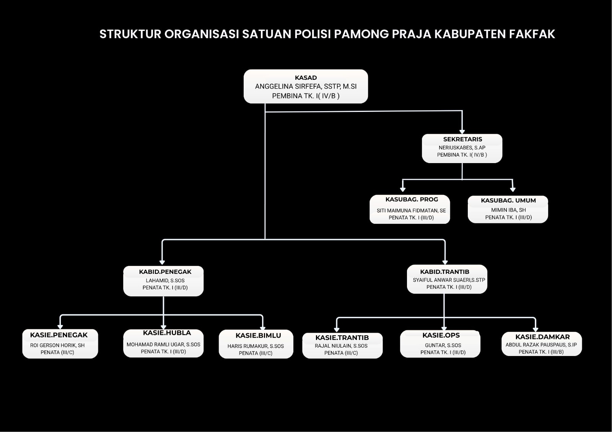

Sejarah Berdiri
Satuan Polisi Pamong Praja (Satpol PP) Kabupaten Fakfak dibentuk berdasarkan Peraturan Daerah Kabupaten Fakfak Nomor 8 Tahun 2016 tentang Pembentukan dan Susunan Perangkat Daerah Kabupaten Fakfak, sebagai unsur pelaksana urusan pemerintahan bidang ketentraman dan ketertiban umum serta perlindungan masyarakat.
Sebelum menjadi Satpol PP, pada masa pemerintahan Kabupaten Fakfak telah terdapat unit pengamanan dan ketertiban yang berkembang dari waktu ke waktu seiring dengan perkembangan administrasi pemerintahan daerah. Seiring dengan diterbitkannya Undang-Undang Nomor 23 Tahun 2014 tentang Pemerintahan Daerah, maka Satpol PP semakin diperkuat kedudukannya sebagai perangkat daerah yang bertugas menegakkan Peraturan Daerah dan menyelenggarakan ketentraman dan ketertiban umum.
Dasar Hukum
- Undang-Undang Nomor 23 Tahun 2014 tentang Pemerintahan Daerah
- Peraturan Pemerintah Nomor 6 Tahun 2010 tentang Satuan Polisi Pamong Praja
- Peraturan Daerah Kabupaten Fakfak Nomor 8 Tahun 2016 tentang Pembentukan dan Susunan Perangkat Daerah
- Peraturan Bupati Fakfak Nomor 45 Tahun 2016 tentang Kedudukan, Susunan Organisasi, Tugas dan Fungsi serta Tata Kerja Satpol PP
Visi
"Terwujudnya Satpol PP yang Profesional, Responsif, dan Berintegritas dalam Menegakkan Peraturan Daerah demi Terciptanya Ketertiban Umum dan Ketenteraman Masyarakat di Kabupaten Fakfak"
Misi
- Meningkatkan kualitas Sumber Daya Manusia (SDM) aparatur Satpol PP melalui pendidikan dan pelatihan berkelanjutan.
- Menegakkan Peraturan Daerah dan Peraturan Bupati secara konsisten, adil, dan transparan.
- Meningkatkan pelayanan dan perlindungan kepada masyarakat dalam rangka menjamin ketentraman dan ketertiban umum.
- Membangun sinergitas dan kerjasama dengan Kepolisian, TNI, serta instansi terkait lainnya.
- Meningkatkan sarana dan prasarana penunjang tugas demi kinerja yang optimal.
- Melaksanakan pembinaan dan pengawasan terhadap penyelenggaraan ketertiban umum dan ketenteraman masyarakat.
Nilai-Nilai Organisasi
- T — Tanggung Jawab: Setiap anggota bertanggung jawab atas tugas dan kewenangannya.
- U — Unggul: Selalu berupaya memberikan kinerja terbaik dan berkualitas.
- G — Gotong Royong: Bekerja sama dan bersinergi antar sesama anggota maupun instansi lain.
- A — Akuntabel: Setiap tindakan dapat dipertanggungjawabkan secara hukum maupun moral.
- S — Santun: Melayani masyarakat dengan sopan, ramah, dan humanis.
Bagan Struktur Organisasi

Pejabat Struktural

Anggelina Sirfefa, S.S.T.P.,M.Si.
Kepala Satpol PP

[Nama Sekretaris], S.Sos.
Sekretaris

Kasi Penegakan Perda

[Nama Kasi 2]
Kasi Ketertiban Umum

[Nama Kasi 3]
Kasi Perlindungan Masyarakat
Tugas Pokok
Satpol PP Kabupaten Fakfak mempunyai tugas membantu Bupati dalam menegakkan Peraturan Daerah dan Peraturan Bupati, menyelenggarakan ketentraman dan ketertiban umum serta perlindungan masyarakat.
Fungsi
Fungsi Utama
- Perumusan kebijakan teknis di bidang ketentraman dan ketertiban umum serta perlindungan masyarakat.
- Penegakan peraturan perundang-undangan daerah dan peraturan kepala daerah.
- Penyelenggaraan ketentraman dan ketertiban umum.
- Pelaksanaan perlindungan masyarakat.
- Pembinaan teknis dan operasional terhadap Satpol PP.
- Pelaksanaan administrasi Satpol PP.
- Pelaksanaan tugas lain yang diberikan oleh Bupati sesuai dengan tugas dan fungsinya.
Uraian Tugas
- Menyiapkan bahan perumusan kebijakan, rencana strategis, dan rencana kerja tahunan Satpol PP.
- Melaksanakan penegakan Peraturan Daerah dan Peraturan Bupati.
- Melaksanakan penyelenggaraan ketentraman dan ketertiban umum di daerah.
- Melaksanakan perlindungan masyarakat dalam rangka menjamin terciptanya kondisi yang kondusif.
- Melaksanakan pembinaan dan pengendalian operasional personel Satpol PP.
- Melaksanakan koordinasi dengan Kepolisian Negara Republik Indonesia dan Tentara Nasional Indonesia serta instansi lainnya.
- Melaksanakan pembinaan administrasi, kepegawaian, keuangan, serta ketatausahaan dan rumah tangga Satpol PP.
- Melaksanakan pengawasan, evaluasi dan pelaporan pelaksanaan tugas Satpol PP.
Pembanding Data & Dokumentasi (Sebelum vs Sesudah)
Modul perbandingan fleksibel untuk menampilkan perkembangan hasil penertiban lapangan, pemulihan fasilitas, maupun peningkatan kinerja operasional Satpol PP Kabupaten Fakfak.